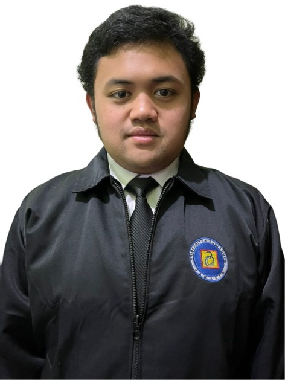
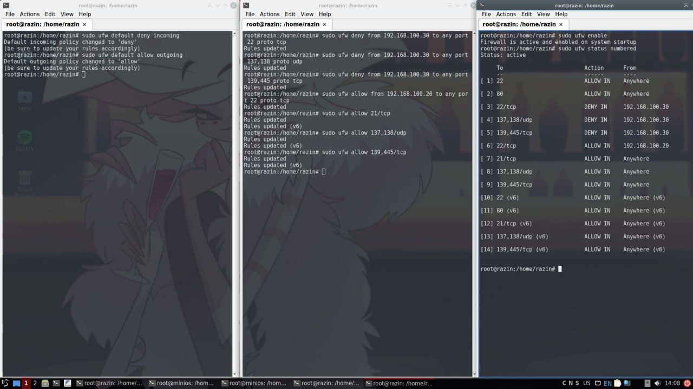
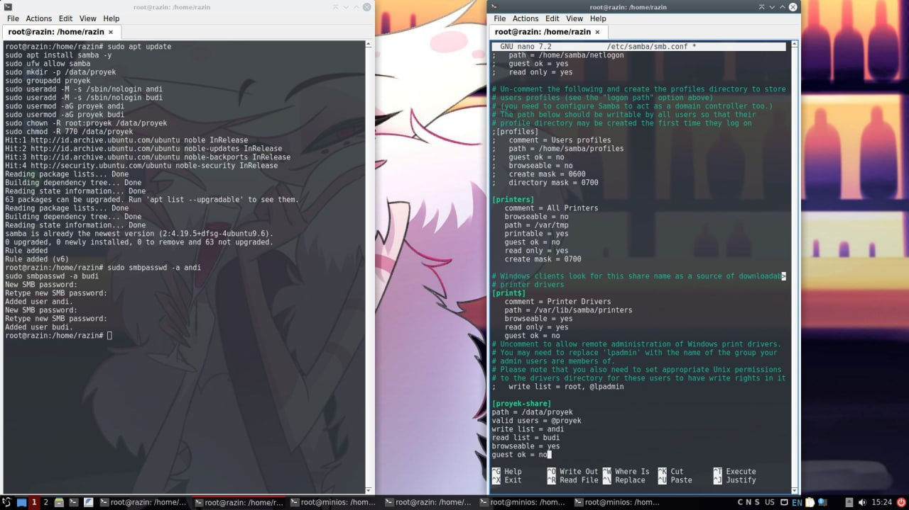

Halo, Saya Razin
Mahasiswa Teknik Informatika yang berdedikasi pada pengembangan perangkat lunak, administrasi Linux, dan keamanan siber.
# Tentang Saya

Saya adalah mahasiswa Teknik Informatika di Universitas Budi Luhur. Saya memiliki minat mendalam terhadap cara sistem bekerja di balik layar, mulai dari membangun struktur web dengan Bootstrap hingga mengonfigurasi lapisan keamanan di level server Linux.
Pengalaman praktis saya mencakup mengatasi masalah perangkat keras laboratorium komputer, menerapkan firewall UFW, serta merancang arsitektur berbagi data yang aman menggunakan Samba File Server.
Semester 4
Teknik Informatika2411500016
NIM Mahasiswa# Keahlian & Tools
# Pendidikan
Universitas Budi Luhur
Teknik Informatika (2024 - Sekarang)
Berfokus pada pengembangan perangkat lunak dan arsitektur jaringan komputer modern.
SMK Telkom Jakarta
Teknik Komputer dan Jaringan (2021 - 2024)
Mempelajari dasar-dasar perakitan PC, troubleshooting hardware, dan topologi jaringan LAN/WAN.
# Pengalaman Praktik
Advanced Network Security Implementation
Linux System Administration
Membangun lapisan keamanan jaringan di sistem operasi Linux:
- Traffic Filtering berbasis IP/Port untuk servis SSH, HTTP, FTP, dan SMB.
- Modifikasi ICMP pada
before.rulesdan setup Rate Limiting.
Samba File Server Configuration
Server Management
Infrastruktur berbagi data lokal yang terenkripsi dan ber-hak akses:
- Penyusunan file
smb.confuntuk membatasi read/write tiap user. - Isolasi data administratif dengan pembuatan environment grup khusus.
Technical Troubleshooting
Laboratorium Komputer
- Mendiagnosis kendala teknis pada PC, seperti masalah bootloop.
- Melakukan pemeliharaan sistem tingkat dasar.
# Dokumentasi Sistem

SECURITYKonfigurasi UFW & Iptables
Tangkapan layar syslog yang menunjukkan penerapan rule pembatasan akses jaringan menggunakan terminal Linux.

SERVERManajemen Samba (smb.conf)
Proses instalasi layanan Samba, pembuatan credential pengguna, serta alokasi direktori kerja bersama pada file konfigurasi inti.